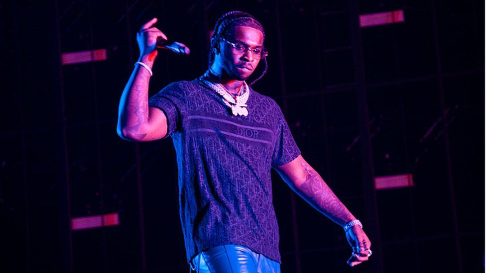

Bashar Barakah Jackson, known professionally as Pop Smoke, was an American rapper, singer, and songwriter. He is considered by many to be the face of Brooklyn drill. Born and raised in Canarsie, Brooklyn, Pop Smoke began his musical career in late 2018 with his debut single "MPR"
